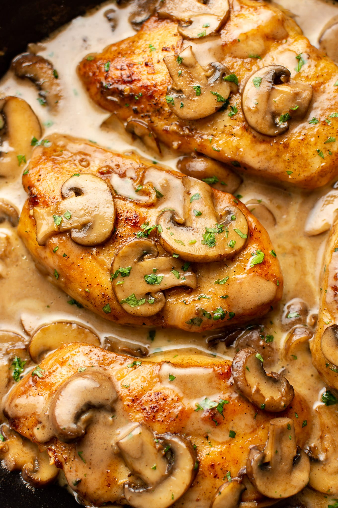

Home
Chicken Marsala

Description
Chicken Marsala is a classic Italian-American dish featuring tender chicken breasts lightly floured and pan-seared,
then smothered in a rich, savory sauce made with Marsala wine, mushrooms, and shallots.
The sauce, infused with earthy and slightly sweet notes from the fortified wine,
is velvety and aromatic, often finished with a touch of butter or cream for smoothness.
Typically served with pasta, mashed potatoes, or crusty bread,
this dish offers a comforting yet sophisticated balance of flavors.
Ingredients
- Chicken breasts
- All-purpose flour
- Olive oil
- Butter
- Mushrooms (cremini or button)
- Shallots
- Marsala wine (dry)
- Chicken broth
- Heavy cream
- Salt
- Pepper
- Parsley
Steps
- Pound chicken breasts to even thickness, season with salt and pepper, and dredge in flour.
- Heat olive oil and butter in a skillet, then sear chicken until golden; set aside.
- Sauté mushrooms and shallots in the same skillet until softened.
- Deglaze with Marsala wine, add chicken broth, and simmer to reduce sauce.
- Return chicken to skillet, simmer until cooked through, and stir in cream (if using).
- Garnish with parsley and serve with pasta or potatoes.
- Enjoy!